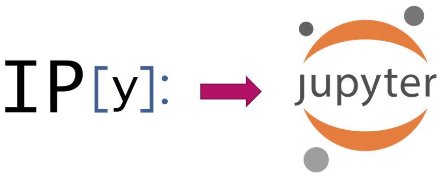

What Is Jupyter?¶
The Jupyter Notebook project is the evolution of the IPython Notebook library which was developed primarily to enhance the default python interactive console by enabling scientific operations and advanced data analytics capabilities via sharable web documents.
IPython¶
Released on Dec 10, 2001 by Fernando Perez while he was a graduate student at the University of Colorado
Release: https://mail.python.org/pipermail/python-list/2001-December/093408.html
IPython as we know it today grew out of the following three projects:
ipython by Fernando Pérez.
IPP by Janko Hauser.
LazyPython by Nathan Gray.

Fernando Perez Inspiration¶
Research with open tools for access and collaboration
Validated in SciPy India 2010 - Workshop to include students from underprivileged colleges in rural India.
Scientific
Business of science is to understand nature
Science is about opening up the black boxes nature
Community!
SciPy: Scientists collaborating and building better tools together!
Less competitions and more collaboration!
Then, in 2014..¶

The IPython team realized they have built a robust application that could be used with other programming languages (Julia, R, etc.) They decided to then create the Jupyter Project making IPython the project that would handle anything Python related as shown in the following example slide presented by Fernando Perez during a presentation around the time the Jupyter Project was announced:

Nowadays, the Jupyter project not only supports Python but also over 40 programming languages such as R, Julia, Scala and PySpark. In fact, its name was originally derived from three programming languages: Julia, Python and R which made it one of the first language-agnostic notebook applications, and now considered one of the most preferred environments for data scientists and engineers in the community to explore and analyze data.
What is Jupyter Notebook?¶
The Jupyter Notebook is an open-source web application that allows you to create and share documents that contain live code, equations, visualizations and narrative text. The Jupyter notebook combines two components:
A web application: a browser-based tool for interactive authoring of documents which combine explanatory text, mathematics, computations and their rich media output.
Notebook documents: a representation of all content visible in the web application, including inputs and outputs of the computations, explanatory text, mathematics, images, and rich media representations of objects.
Uses include:
Data cleaning and transformation
Statistical modeling
Data visualization
Machine learning, and much more
What is a Notebook?¶
Think of a notebook as a document that you can access via a web interface that allows you to save input (i.e. live code) and output (i.e. code execution results / evaluated code output) of interactive sessions as well as important notes needed to explain the methodology and steps taken to perform specific tasks (i.e data analysis).
References¶
https://ipython.readthedocs.io/en/stable/about/history.html
https://ipython.readthedocs.io/en/stable/interactive/python-ipython-diff.html
https://www.youtube.com/watch?v=xuNj5paMuow&list=PL055Epbe6d5aP6Ru42r7hk68GTSaclYgi
https://speakerdeck.com/fperez/project-jupyter?slide=5
https://jupyter.org/